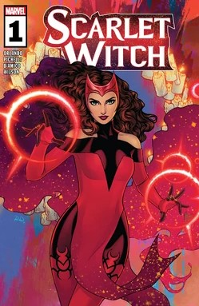
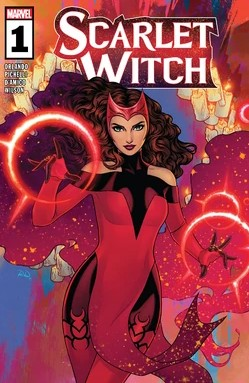

Scarlet Witch (Wanda Maximoff) is a fictional superhero appearing in Marvel Comics. Created by writer Stan Lee and artist Jack Kirby, she first appeared in X-Men #4 (1964). She is a mutant and sorceress with reality-warping abilities, probability manipulation, and mastery of chaos magic. Scarlet Witch is known for her complex morality, emotional struggles, and immense power, often making her both a revered hero and a potential threat to the Marvel Universe.
Wanda Maximoff is the twin sister of Pietro Maximoff (Quicksilver) and was originally raised under the guidance of Magneto, believing him to be her father. Her early life exposed her to both tragedy and manipulation, shaping her into a character defined by resilience and determination. Over time, she develops into a skilled sorceress and Avenger, using her abilities to protect humanity despite the weight of her past. Wanda’s story explores themes of identity, grief, love, and the consequences of wielding extraordinary power, making her one of Marvel’s most emotionally rich and multidimensional characters.
Throughout the generations, different members of the Maximoff family, a Romani bloodline, are born with a strong talent for magic. Several members of the family associate their magic with scarlet, calling themselves Scarlet Witch or Scarlet Warlock, just as certain other sorcerers choose to identify with complex rather than basic colors. One Scarlet Warlock has two children, his daughter Natalya Maximoff, a powerful magic-user, and his son Django Maximoff, a medicine man and storyteller whose latent magic abilities bring life to his strange puppets. Among Natalya's people, red is considered a color of bad luck. Natalya enjoys this and happily adopts the title Scarlet Witch, believing it implies misfortune for her enemies. As the Scarlet Witch, she spends years fighting a variety of mystical enemies that threaten humanity, sometimes aided by allies such as the centuries-old sorceress Agatha Harkness of New Salem.[49] Her brother Django remains with their tribe, making a home in Serbia with his wife Marya. Django and Marya have twins, Ana and Mateo, but the children tragically die while still young.[50]
While still living in Serbia, Natalya has twin children, Pietro Maximoff and Wanda Marya Maximoff. According to the demonic Elder God called Chthon, he witnesses Wanda's birth and infuses her with some of his own magical energy in hopes to one day use her as a host vessel. The Avengers #187 (Marvel Comics, 1979). While she battles more villains and menaces, Natalya leaves her children in the care of her brother and sister-in-law who now live with other Romany in Novi Pazar, Serbia. The area is soon attacked by the Knights of Wundagore. Their leader and creator, the geneticist Herbert Wyndham, known to many as the High Evolutionary, wants to experiment on children who have the genetics to possibly achieve great superhuman power. Knowing Wanda and Pietro are children of a powerful witch, a local priest gives the twins to the High Evolutionary to stop the attacks. The twins are taken to the High Evolutionary's base at Mount Wundagore in the neighboring country of Transia. According to the High Evolutionary, his experiments allows the twins the potential for power later (and, by chance, also wrongly makes them appear to be mutants to most tests), but the results are not as impressive as he desires.[51]
While the children are still at Mount Wundagore, they are attended by Bova, a cow engineered by the High Evolutionary who acts as a nurse. Later on, the retired superhero the Whizzer (Robert Frank) and his pregnant wife Miss America (Madeline Joyce Frank) arrive at Mount Wundagore. Madeline goes into labor, and both baby and mother die. Hoping to ease the suffering of her husband, and believing the children would be better raised away from Mount Wundagore, Bova tells Frank the twins are his children. Overwhelmed by the death of his wife, Frank leaves rather than adopt the children.
Tracking down her children, Natalya Maximoff attacks Wundagore and fights the High Evolutionary's forces to a stand-still. During the attack, she is killed by the father of Wanda and Pietro. Either because he has no more use for the children or is impressed by the heroism of their mother, the High Evolutionary tracks down Django and Marya Maximoff and gives them the twins. Django and Marya decide not to explain the twins' true heritage to them until they are old enough to accept their real mother was a sorceress who died in battle (the Maximoffs mistakenly believe the High Evolutionary's forces killed her).[53] Before the twins reach their tenth birthday, they start to show signs of superhuman abilities, with Pietro using superhuman speed and Wanda casting minor hexes that cause a variety of effects, such as momentarily moving or levitating objects.
Locals who hold prejudice against the Roma people hear rumors of the twins' powers. After Django steals bread to feed his family, the locals attack the Roma tribe, burning down their homes. The Maximoff wagon is set on fire with Marya still inside and Django is beaten by multiple attackers. Wanda and Pietro flee, believing Django and Marya are dead. Unknown to them, Marya survives the fire, though her body and face suffer serious burns and scarring. Django, mourning the loss of yet more children and overwhelmed by guilt that he couldn't protect Marya, suffers a break from reality. He convinces himself Wanda and Pietro were his biological children Ana and Mateo, and that Marya is dead. He starts a new, solitary life, while Marya returns to Serbia and stays with friends.
Repressing much of the memory of their trauma, Wanda and Pietro travel through Transia as homeless orphans for years. During this time, the aggressive Pietro becomes almost obsessively protective of his sister, even referring to her as his "little sister" because she is 13 minutes younger. Wanda's "hex power" becomes focused enough that she can instantly cause bad luck for enemies. When the twins are in their late teens, Wanda uses her power to save a child. This leads to locals accusing her of witchcraft and attempting to burn her alive at a stake. Having heard reports of the twins, the mutant terrorist Magneto arrives and saves her.[15] Learning from the two Maximoffs that their powers emerged naturally and weren't the result of an outside force (as far as they knew), Magneto concludes Wanda and Pietro are mutants. Later scans seems to confirm they each possess the X-gene, which marks a mutant human from an average human
Scarlet Witch appears in comic books, animated series, video games, and films. She is a core member of the Avengers and has been central to many key Marvel storylines, including House of M, Avengers: The Children's Crusade, and various solo adventures exploring magic and identity. In the Marvel Cinematic Universe, she is portrayed by Elizabeth Olsen, appearing in Avengers: Age of Ultron, Captain America: Civil War, Avengers: Infinity War, Avengers: Endgame, and the Disney+ series WandaVision (2021), which delves deeply into her powers, grief, and journey toward self-discovery.